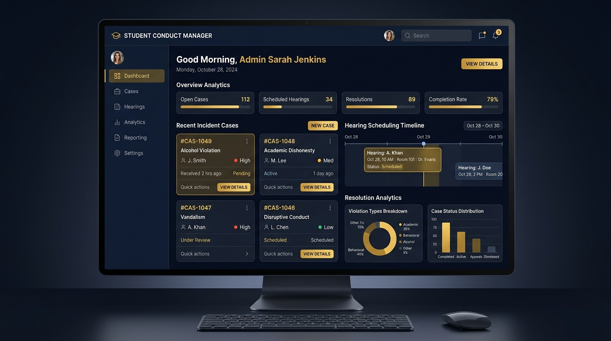

A modern, cross-platform institutional solution engineered to streamline incident reporting, enforce sequential hearing-before-sanction workflow rules, and manage student appeals with complete transparency.

Built-in business logic ensures zero out-of-order rulings. Sanctions are strictly locked until a disciplinary hearing has been scheduled and conducted.
Students, witnesses, or staff report incidents with category tagging, evidence descriptions, and priority levels.
Step 1: IntakeStaff assign officers, set venue & date. System updates single-record hearing state without duplicate entries.
Step 2: Notice IssuedSanction module unlocks on/after hearing date. Committee enters formal warnings, probation terms, or suspensions.
Step 3: Gated SanctionStudents can file a 1-click appeal. Admin board reviews medical or new evidence before closing the case.
Step 4: Due ProcessEach portal provides strict data isolation and dedicated tools tailored to students, disciplinary staff, and university administrators.
Empowering students with clear visibility into reported incidents, scheduled committee hearings, and seamless 1-click appeal channels.
Adjust the hearing date below to see how SDMS automatically locks or unlocks the Sanction Module based on whether the hearing date has arrived.
Every tool in SDMS is designed to ensure procedural fairness, data accuracy, and administrative efficiency.
Guarantees due process by locking sanctions until after the hearing date, preventing out-of-order rulings.
Eliminates duplicate hearing entries when rescheduling, keeping case histories clean and synchronized.
Strict access controls separate Student view, Staff committee management, and Admin appeal reviews.
Executive dashboards track incident categories, resolution speeds, and committee workload metrics.
Students can file formal appeal statements with evidence attachments for administrative review panels.
Built with Flutter & Supabase for seamless performance across Web, Android, iOS, and Desktop.
Select your role below for clear, step-by-step instructions on navigating the system and managing disciplinary actions.
Access your account using your Student ID. View your active disciplinary status and historical case log in real-time.
Submit a confidential incident report or witness statement with category tags (academic dishonesty, conduct, property damage).
Receive hearing date and venue details. Once ruling is issued, file a 1-click appeal with supporting evidence if eligible.
Find instant answers to common questions regarding system rules, hearing schedules, and sanction rulings.
Fully compliant with academic due process standards, encrypted Supabase cloud storage, and institutional privacy policies.